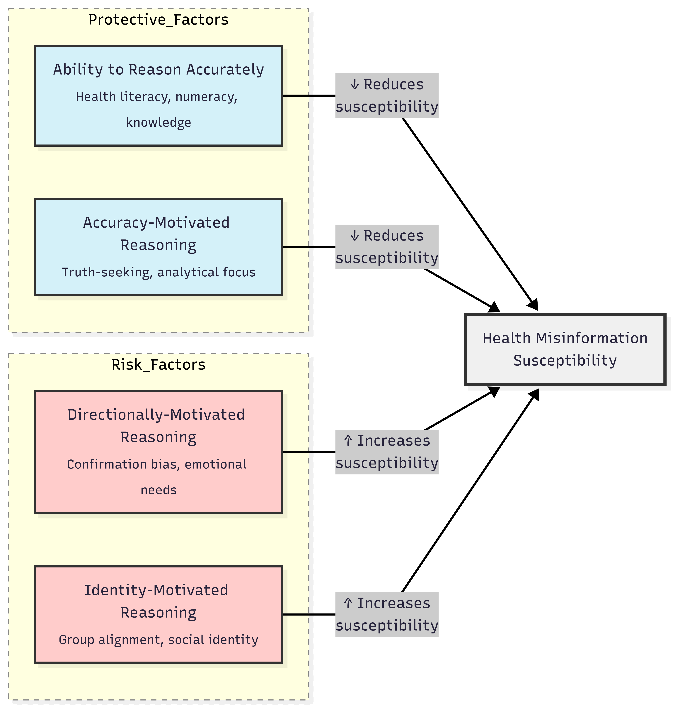

Imagine choosing cancer treatments based on a Facebook post or rejecting vaccines because of a viral TikTok video. Health misinformation isn’t just annoying–it’s dangerous. During COVID-19, false claims about bleach cures and 5G conspiracies demonstrated how quickly bad science spreads. But why do some people believe these claims while others don’t? A groundbreaking systematic review in Social Science & Medicine (Nan, Wang, & Thier, 2022) analyzed 61 studies with nearly 200,000 participants to answer this exact question.
The Four Psychological Pathways to Vulnerability
The researchers developed an integrative psychological model showing how susceptibility flows through four cognitive channels:
Ability to Reason Accurately
People with strong health literacy, subject knowledge, or numeracy skills are better equipped to evaluate claims. For example, understanding how vaccines work makes you 90% less likely to believe anti-vax misinformation (Govender et al., 2017).Accuracy-Motivated Reasoning
Those who pause to analyze claims resist misinformation best. Those preferring analytical processing over intuitive thinking are less vulnerable. Individuals scoring high on cognitive reflection tests were 3x less likely to accept COVID conspiracies (Nurse et al., 2021).Directionally-Motivated Reasoning
We often believe what feels true. People often accept claims aligning with pre-existing beliefs (political/religious) or emotional states (anxiety). Conspiracy thinkers are 68% more susceptible to health misinformation, while conservatives and highly religious individuals show elevated risk due to confirmation bias (Uscinski et al., 2020).Identity-Motivated Reasoning
Group identities (political affiliation, national identity) shape belief formation. When group loyalty trumps truth, susceptibility spikes. Republican identifiers were 40% more likely to believe pandemic falsehoods than Democrats (Motta, 2021).
This framework explains why misinformation resistance isn’t just about intelligence-it’s about how we process information.
Table 1: Psychological Shields and Vulnerabilities
| Protective Factors | Risk Factors | Strength of Evidence |
|---|---|---|
| Analytical thinking | Conspiracy thinking | ★★★★★ (7 studies) |
| Health/science literacy | Conservative ideology | ★★★★☆ (15 studies) |
| Trust in scientists | Religiosity | ★★★★☆ (14 studies) |
| Subject knowledge | Trust in friends/family* | ★★★☆☆ (9 studies) |
*As primary information sources
Who’s Most Vulnerable? Demographic Realities
While psychology explains why we believe, demographics reveal who believes most often. The review uncovered striking patterns:
Racial minorities face disproportionate risk: African Americans were 50% more likely to believe vaccine misinformation, Hispanic Americans 35% more (Austin et al., 2021). This likely stems from historical medical exploitation and healthcare inequities.
Social media dependence is the strongest behavioral predictor. Those sourcing health information from social platforms were 4.2x more susceptible than those using scientific sources (Lee et al., 2020).
Education and age offer partial protection: 70% of studies found college education reduces susceptibility, while 60% showed seniors resist misinformation better than youth-likely due to media literacy and life experience.
Table 2: Demographic Susceptibility Patterns
| Group | Risk Level | Key Contributing Factors |
|---|---|---|
| Social media reliant | High | Algorithmic bubbles, rapid sharing |
| Racial minorities | High | Medical mistrust, information access |
| Youth (18-30) | Moderate | Less life experience, digital natives |
| Low health literacy | Moderate | Difficulty evaluating sources |
Evidence-Based Solutions: Building Resilience
The findings suggest tailored interventions for different vulnerability pathways:
For ability gaps:
Singapore’s “Health Buddy” initiative teaches seniors to identify medical misinformation through community workshops, reducing false belief by 57% in pilot studies.For accuracy motivation:
“Prebunking” campaigns like Cambridge University’s Bad News game inoculate users by exposing manipulation tactics upfront. This cut COVID misinformation sharing by 40% (Roozenbeek & van der Linden, 2019).For identity-based resistance:
Conservative doctors debunking vaccine misinformation on Fox News reduced Republican hesitancy by 22%-proving messenger credibility matters (Nyhan & Reifler, 2015).
Platforms like Medify now embed “accuracy prompts” asking “Have you verified this against reliable sources?” before sharing-a nudge directly inspired by these findings.
The Path Forward
Three frontiers demand urgent attention: 1. Algorithmic transparency: How platforms amplify vulnerability 2. Culturally tailored interventions: For disproportionately affected communities 3. Early education: Building “information literacy” from elementary school
According to Nan et al. (2022): “Combating misinformation requires addressing both psychological vulnerabilities and systemic information gaps.”
The evidence is clear: We protect ourselves not just with facts, but by strengthening critical thinking, rebuilding trust in science, and designing wiser information ecosystems. Your best defense? Stay curious, verify sources, and remember-if a health claim perfectly aligns with your worldview or triggers strong emotions, it deserves extra scrutiny.
Visual Summary: The Misinformation Susceptibility Framework
 Adapted from Nan et al. (2022) showing interactions between reasoning ability, motivation, and identity (https://www.mermaidchart.com/app/projects/9f32483c-ce7b-4a81-ab5d-3991916b50d3/diagrams/1c50fc90-ab56-4bf4-aba6-ceec73ffa621/version/v0.1/edit)
References
Supported by TRR 266 Accounting for Transparency